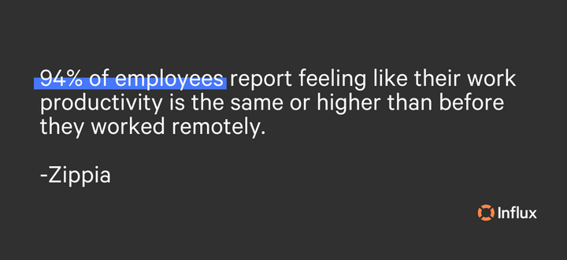
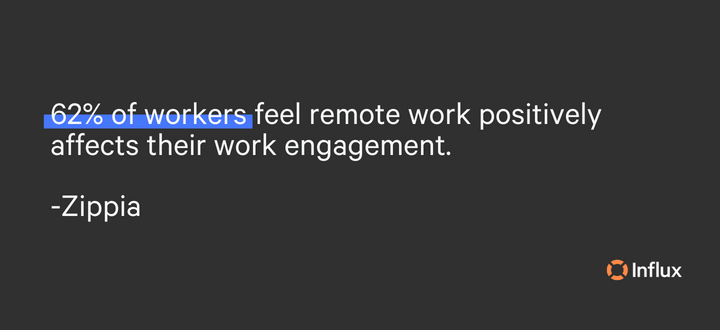
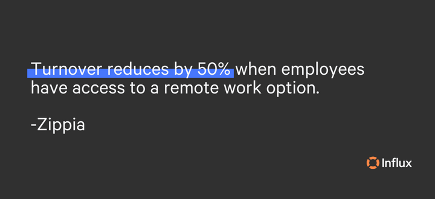

Remote work has been on a steady incline for years, and it’s only going up. According to Zippia, there could be as many as 36.2 million remote-work Americans in 2025. Whether your team is already remote or you’re thinking of making the transition from in-office to hybrid/remote, this blog will cover remote work culture, the benefits, how remote employee engagement impacts customer experience (CX), and a few ways to keep remote employees engaged.
What is remote work culture?
Remote work culture is an extension of a company’s overall culture that includes everything from expectations to your team’s values. It requires intention, mindfulness, and thinking through how your team works together. Set on a foundation of trust, remote work places emphasis on clear communication; an important skill in any work setting. Like in-office work, remote cultures need regular rituals, such as morning or weekly team check-ins, to come together for collaboration, progress updates, and idea bouncing.
Remote work offers creative ways to keep employees engaged and on the right path to accomplish team goals. Promoting this unique culture will attract high-performing candidates who are aligned with your core values and understand the company’s mission. The benefits of creating a strong, remote work culture can positively impact employees, customers, and companies. Check it out in the next section!

Benefits of improving remote worker experience
Remote work is increasingly becoming the ‘new normal’, with more flexibility being the primary driver of its success. According to Owl Labs’ State of Remote Work, companies that support remote work experience 25% lower turnover than those that don’t. Along with improving employee retention rates, the benefits of enhancing remote worker experience can have a positive impact on customer experience (CX), promote employee engagement, increase morale, and boost productivity.
Through autonomy and responsibility, remote work leads to stronger leadership abilities and self-sufficiency. Although not everyone can work remotely, for those who can, it is a way to improve performance and encourage a happier, healthier lifestyle. According to Time, health issues associated with commuting include:
- Increased blood sugar levels
- Higher cholesterol
- Greater risk for depression
- Increased anxiety
- Lower happiness and life satisfaction
- Temporary blood pressure spikes
- Higher blood pressure over time
- Lower cardiovascular fitness
- Worse sleep
- Worse back pain
Speaking from personal experience, I went from working 9-5s in an office to completely being remote and I have never been happier, more productive, or more in tune with my coworkers without wasting time. The positive effects don’t stop there. Getting a sense of freedom back over my life has motivated me to really dig deep when I sit down for working hours and to be grateful that I work for a company that understands the value of remote work. Keeping employees engaged when working remotely simply takes a bit of planning.
The link between employee experience and customer experience
Customer experience often reflects how employees feel about their work. Because of this, satisfied employees are more likely to provide a better customer experience compared to employees who are unhappy, which can unintentionally trickle into support. Having an understanding of how an employee’s role impacts overall CX plays a part in influencing the decisions they make. Taking care of employees takes care of customers because when employees feel valued and heard, they’ll give that same attention to customers.

How to engage remote employees for improved CX
1. Prioritize strong communication tools that prevent isolation
Staying connected across cities, states, and even different time zones is not as difficult as one might think. In our digital age, tools and technologies are making it easier and easier to keep work collaborative and up-to-date. Things don’t have to get complicated working remotely, and staying in touch through email, phone, and video calls is the first step towards successful communication.
Your team most likely already has common communication devices, such as Zoom or Slack. Taking these a step further, you can use tools such as Slack’s status setting to recognize when coworkers are online or on vacation. With apps like Productive or Asana, project management has never been easier. Adding simple, daily practices into routines allows smooth workflows and comprehension of responsibilities.
2. Give employees a sense of belonging
A strong remote culture will make sure that employees feel welcomed, despite not sharing a physical workspace. Giving employees a sense of belonging through connection to coworkers and the company mission is important. McKinsey found that 39% of survey respondents have turned down or decided not to pursue a job because of a lack of inclusion in an organization.
3. Support your newest hires
The goals of onboarding should be to set new recruits up for success and reduce the time it takes for them to feel at ease in their new role. According to Business News Daily…
More than one-third of employers don’t have a thorough, structured onboarding process for new hires.
A poor onboarding process lowers confidence in new employees and can lead to worsened engagement, and an increased risk of leaving for a new position elsewhere. Managers should offer more resources, communication, and training to help new remote workers get up to speed. New staff members should have access to login credentials, documents, processes, tools, and equipment to set them up for success.

4. Make sure employees feel heard and valued
Even from a distance, employees deserve to be appreciated for their work. Show your team that you see and value them by searching for simple acts of kindness such as a virtual gift card for someone’s birthday, a Venmo dedicated to coffee during a rough week, or even a quick message to show your appreciation. Checking in every so often for a one-on-one quick chat on how everything is going shows employees that they can talk to you about any concerns or frustrations should they come up.
5. Keep work fun
Send GIFs and memes to your communication channels, start virtual meetings with a quick icebreaker question, or have themed zoom calls. You know your team best - whatever keeps them engaged with the not-as-exciting parts of work can brighten the mood and encourage personality and diversity in the workplace.
Customer support, done
Our global teams take advantage of the ‘follow the sun model’ designed to provide efficient, 24/7 support. Our agents are trained to fit your company in as little as one week. Build a flexible, long-term solution for your business that can be fully integrated into an existing workflow and team structure. Get started now!